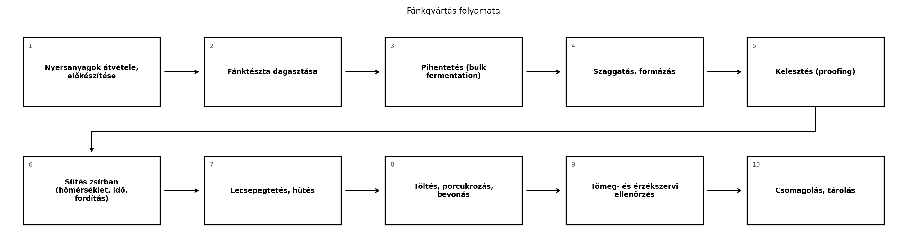

Hajnali műszakban a pék a fánksütő mellett áll, és azt tapasztalja, hogy az első adag fánk túl gyorsan barnul, a közepe még nyers, a következő adag viszont olajosan, nehezen emészthető lesz. Az üzletvezető a sütőzsiradék állapotát is ellenőrzi: sötét, habzik, és kellemetlen szaga van. A vevők egy része panaszkodik, hogy a fánk gyomrot megterhelő. Ez a tipikus helyzet mutatja, hogy a fánkok és zsírban sütött termékek gyártása nem csupán „forró olajba dobás”. A tészta állaga, a kelesztés, a zsiradék hőmérséklete, a sütési idő és a zsiradék minősége együtt határozza meg a termék biztonságát, élvezeti értékét és eltarthatóságát. Ebben az alfejezetben a fánktészta készítésétől a késztermék töltéséig és a zsiradék cseréjéig minden lépést úgy tanítunk, hogy a higiénia, a HACCP és a zsírtűz-megelőzés mindig előbbre való legyen.
A fánkgyártás folyamata egy zárt lánc: ha bármelyik lépést elhagyjuk, a késztermék hibás lesz, vagy a zsiradék idő előtt tönkremegy. Az alábbi folyamatábra a tipikus üzemi fánkgyártás lépéseit mutatja.

A folyamatban a kritikus pontok a sütési hőmérséklet, a zsiradék minősége és a késztermék átsültsége. Ha ezeket nem ellenőrizzük, a fánk nyers maradhat, túlzottan zsíros lesz, vagy a zsiradék bomlástermékei egészségkárosítóvá teszik a terméket.
Definíció. A fánk olyan élesztővel vagy kémiai lazítóval készült, lágy tésztájú termék, amelyet bő, forró sütőzsiradékban sütünk. A hagyományos magyar szalagos fánk nevét az oldalán, a magassága közepén körbefutó világosabb „szalagról” kapta: a jól megkelt, könnyű fánk a zsiradékban úszik, ezért mindig csak az alsó fele sül, és a két oldal sütése között a zsiradékból kiálló sáv világos marad.
Definíció. A zsírban sütés olyan hőkezelési művelet, amelyben a hőátadást forró zsiradék biztosítja. A termék felületén gyorsan kialakuló, sült héj megtartja a belső nedvességet, a tészta belseje pedig a kialakuló gőz és a hő hatására átsül.
Definíció. A sütőzsiradék az a növényi olaj, sütőolaj, sütőzsír (pl. magas olajsavtartalmú vagy frakcionált pálmazsír) vagy ezek keveréke, amelyet a fánk sütéséhez használunk; részlegesen hidrogénezett zsiradék a transzzsírsav-korlát miatt nem ajánlott (ellenőrizendő: (EU) 2019/649 rendelet). A sütőzsiradék hőmérséklete, kémiai állapota és tisztasága kulcsparaméter.
Definíció. A poláris anyag a sütőzsiradékban a hő, oxigén, víz és élelmiszer-maradványok hatására keletkező bomlástermékek gyűjtőneve (oxidált, polimerizált vegyületek, szabad zsírsavak). A poláris anyag tartalom emelkedése a zsiradék „fáradtságát” jelzi, és meghatározza a csere szükségességét.
Definíció. Az akrilamid olyan folyamat-szennyező anyag, amely magas hőmérsékleten, elsősorban redukáló cukrok és az aszparagin aminosav reakciójával képződik. Zsírban sütéskor a túl magas hőmérséklet, a hosszú sütési idő és a túlzott barnulás növeli az akrilamid-képződést.
Összefüggés. A fánk sütésekor a zsiradék hőmérséklete, a sütési idő és a tészta víztartalma együttesen határozza meg a termék átsültségét, zsírfelvételét és a héj színét. Az optimális sütési hőmérséklet általában 170–180°C (tanulási példa, ellenőrizendő: üzemi technológiai lap, gyártói adatlap). Alacsonyabb hőmérsékleten a fánk több zsiradékot szív magába, magasabb hőmérsékleten a felület gyorsan megéghet, miközben a belseje nyers marad.
A fánktészta jellemzője a lágy, de nem ragadós állapot, a viszonylag magas folyadéktartalom (TA), a mérsékelt cukor- és zsiradéktartalom, valamint az élesztős lazítás. A tészta összetételét lisztre vetített százalékban adjuk meg: a liszt 100%, a víz általában 45–55%, az élesztő 5–8%, a cukor 5–10%, a tojás 10–15%, a vaj vagy sütőmargarin 5–10%, a só 1,5–2%. A tésztahozam így kb. 180–190 kg/100 kg liszt, a TA (liszt + víz) kb. 145–155 (tanulási példa).
Technológiai lépések:
Figyelem. A túlkelt fánk a zsiradékban széteshet, sok zsiradékot szív fel, és a héja egyenetlen lesz. Az alulkelt fánk sütés közben nem emelkedik meg, tömör, nyers bélzetű marad.
A fánk sütésekor a forró zsiradék hőmérsékletét folyamatosan ellenőrizni kell. A sütőedénybe helyezett fánk először lesüllyed, majd a belsejében képződő gőz hatására felemelkedik és a felszínen úszik. A sütést a fánk felületi színe és az átsültség alapján irányítjuk.
A szalag kialakulását az alábbi képsor mutatja: az 1. kocka a szaggatást, a 2. az úszó fánkot a zsiradékszinttel, a 3. a fordítást; az alsó sor a helyes szalagos fánk (4) és két tipikus hiba (5–6) metszete.
A szalag tehát minőségjel: azt mutatja, hogy a fánk jól megkelt (úszott), és a zsiradék hőmérséklete megfelelő volt. Ha a fánk lesüllyed (5. kocka), alulkelt vagy túl nehéz; ha a bél olajos (6. kocka), a zsiradék túl hideg volt. A HTML-kiadásban a lépések egyenként lejátszhatók.
Sütési paraméterek (tanulási példa, ellenőrizendő: üzemi technológiai lap, gyártói adatlap):
Kisüzemi fánksütés. Kis pékségben hagyományos, vastag falú, termosztátos fritőzt vagy elektromos fánksütőt használnak. A fánkokat adagonként, óvatosan engedjük a zsiradékba, hogy a hőmérséklet ne essen le hirtelen. A zsiradék szintjét csak annyira töltjük, hogy a fánk szabadon úszhasson, és ne érjen az edény aljához.
Nagyüzemi fánksütő. A nagyüzemi, folyamatos üzemű fánksütő (szalagos fánksütő) egy hőszabályozott olajfürdőből és egy szállítószalagból áll. A fánkokat a gép adagolja a forró zsiradékba, a szalag mozgatja őket, közben automatikusan megfordulnak, majd a késztermék a lecsepegtető részre kerül. Az ilyen gépnél a hőmérséklet-szabályozó, az olajszint-érzékelő, a szűrő és a szellőzés állandó ellenőrzést igényel.
Gépbiztonság. A fánksütő gépet csak betanítás után, felügyelettel kezelheti a tanuló. Üzem előtt ellenőrizni kell a védőburkolatot, a hőmérséklet-szabályozó működését, a vészleállítót, a zsiradék szintjét és a szellőzést. A sütőedénybe nyúlni, a fánkot kézzel igazítani tilos, amíg a gép működik vagy a zsiradék forró. Tisztítás és beavatkozás előtt a gépet le kell állítani, áramtalanítani kell, és meg kell várni, amíg a zsiradék lehűl.
Az alábbi ábra felső része egy kisüzemi, termosztátos fritőz metszete a biztonság szempontjából fontos részekkel (1–6), az alsó sor két helyes–hibás pár: a fánk beengedése és a zsiradéktűz oltása.
Tilos. Égő zsiradékra vizet önteni tilos: a víz a forró zsiradék alatt robbanásszerűen gőzzé válik, és az égő zsiradékot szétveti. Zsiradéktűznél a fűtést lekapcsoljuk, a fedőt vagy a tűzoltó takarót (MSZ EN 1869) oldalról ráhúzzuk, szükség esetén F osztályú tűzoltó készüléket (MSZ EN 2 szerinti F tűzosztály) használunk, az edényt nem mozgatjuk (ellenőrizendő: OTSZ és az üzemi tűzvédelmi szabályzat). A HTML-kiadásban a fritőz részei rámutatással kiemelhetők, a párok gombokkal válthatók.
A sütőzsiradék a használat során folyamatosan bomlik: oxidálódik, polimerizálódik, szabad zsírsavak és poláris anyagok keletkeznek. A fáradt zsiradék sötétedik, habzik, füstöl, kellemetlen, égett szagot áraszt, és a kész fánk is rossz ízű, nehéz lesz. A zsiradék minőségét a poláris anyag tartalom mérésével lehet objektíven követni.
Szabály. A sütőzsiradékot cserélni kell, ha a poláris anyag tartalom meghaladja a megengedett határértéket, vagy ha érzékszervi jelek (sötét szín, habzás, füst, avas szag) mutatják a fáradtságot. A poláris anyag tartalomra egységes uniós határérték nincs; a tagállami és szakmai ajánlások jellemzően 24–27% körüliek (ellenőrizendő: hatályos magyar előírás, NÉBIH útmutató, HACCP-terv). Egyes üzemi gyakorlatokban 24% felett már indokolt a csere.
Számítási példa. Egy fánksütő üzemben a sütőzsiradék poláris anyag tartalmát kézi mérőműszerrel naponta kétszer mérik. A délelőtti mérés 18%, a délutáni mérés 25% (tanulási példa). A délutáni érték eléri a 24%-os belső határértéket, ezért a zsiradékot le kell cserélni, vagy részben friss zsiradékra kell cserélni, és a sütést csak akkor folytatni, ha a keverék poláris anyag tartalma újra 24% alá csökken (ellenőrizendő: üzemi szabályzat).
Figyelem. A zsiradék cseréjekor a forró olajat soha ne öntsük ki azonnal, hanem hagyjuk lehűlni biztonságos hőmérsékletre, majd zárt, hőálló edénybe gyűjtjük. A fáradt zsiradékot elkülönítetten, zárt edényben gyűjtjük, és engedéllyel rendelkező átvevőnek adjuk át; lefolyóba önteni tilos (ellenőrizendő: hulladékbesorolás, hatályos hulladékjegyzék, önkormányzati előírás).
Az (EU) 2017/2158 rendelet az élelmiszer-vállalkozókat az akrilamid-csökkentő intézkedések alkalmazására kötelezi a sütőipari termékeknél is (ellenőrizendő: aktuális szöveg, az érintett termékkategóriák). A fánk esetében az akrilamid képződése a magas hőmérséklet, a hosszú sütési idő, a túlzott barnulás és a tészta magas redukálócukor-tartalma miatt nő.
Gyakorlati csökkentő lépések:
Higiénia–technológia–minőség hármas: A túl magas hőmérséklet egyszerre jelent élelmiszerbiztonsági kockázatot (akrilamid, toxikus bomlástermékek), minőségi hibát (keserű, égett íz, sötét héj) és tűzveszélyt (zsírtűz). Ezért a hőmérséklet-ellenőrzés a fánksütés legfontosabb rutinja.
A kész fánkokat a sütés után először lecsepegtetjük, majd rácson hűlni hagyjuk. A hűlt fánk tömegét ellenőrizni kell, mert a sütés során a víz elpárolog, ugyanakkor a tészta zsiradékot szív fel. A kész fánk tömegének és érzékszervi tulajdonságainak meg kell felelniük a technológiai lapon megadott értékeknek.
Töltés. A lekváros vagy krémes fánkokat hűlés után töltsük. A tölteléket nyomózsákba töltjük, és a fánk oldalába szúrt, vékony csővel vagy speciális töltővel juttatjuk be. A hűtést igénylő krémet legfeljebb 5 °C-ról, csak a töltéshez kivett adagban használjuk; a krémmel töltött fánkot töltés után azonnal legfeljebb 5 °C-on tároljuk. A lekvárt hidegen vagy a technológiai lap szerint melegen (forrón) adagoljuk, langyosan nem tartjuk; a túl forró töltelék ronthatja a tészta állagát és a fánk szerkezetét (tanulási példa, ellenőrizendő: HACCP-terv).
Felületkezelés. A fánkokat leggyakrabban porcukorral hintjük, de lehet csokoládéval bevonni vagy fondannal áthúzni. A porcukrozást csak közvetlenül a csomagolás vagy eladás előtt végezzük, mert a cukor a nedvesség hatására feloldódik. A csokoládé- és fondanbevonat hőmérséklete szabályozott: a csokoládét temperálni kell a fényes, ropogós bevonat érdekében (ellenőrizendő: a felhasznált bevonat gyártói utasítása). A fondant melegen, hígítva, 35–40°C-on használható (tanulási példa).
Allergén. A fánk tésztája gyakran tartalmaz tojást, tejet (vaj, tejpor), glutént, esetleg szóját (a sütőolaj vagy margarin adaléka). A töltelék és a díszítés további allergéneket vihet be: a lekvárban kén-dioxid/szulfit lehet (10 mg/kg felett jelölendő; ellenőrizendő: 1169/2011/EU II. melléklet, beszállítói specifikáció), a csokoládéban tej, szója, diófélék. A gyártás során a gluténmentes vagy egyéb „mentes” termékeknél keresztszennyeződés léphet fel a közös fánksütőben, ezért ilyen termékeket csak elkülönített, tisztított berendezésen, külön zsiradékkal szabad készíteni (ellenőrizendő: az 1169/2011/EU rendelet szerinti jelölési követelmények).
Cél: 100 db, kb. 60 g kész tömegű szalagos fánk előállítása.
Eszközök és anyagok: dagasztógép, mérlegek, hőmérő, fánkszaggató, kelesztőlemez, fritőz vagy fánksütő, csipesz, rács, porcukor, töltőzsák (ha töltünk).
Higiénia. A gyakorlat előtt ellenőrizzük: tiszta munkaruha, hajháló, ékszer nélkül, kézmosás, a munkafelület és az eszközök tiszták. Fertőző betegség (hasmenés, hányás, gennyes seb) esetén a tanuló nem dolgozhat élelmiszerrel.
Gépbiztonság. A dagasztógépnél ellenőrizzük a védőburkolatot, a reteszelést, a vészleállítót. A fánksütőnél ellenőrizzük a hőmérséklet-szabályozót, az olajszintet, a szellőzést, a fedőt, a tűzvédelmi eszközöket (F osztályú tűzoltó készülék, tűzoltó takaró). A gépet csak betanítás után kezeljük.
Lépések:
HACCP pontok a gyakorlatban (tanulási példa, ellenőrizendő: üzemi HACCP-terv):
| Lépés | Veszély | Határérték | Ellenőrzés | Helyesbítés |
|---|---|---|---|---|
| Zsiradék hőmérséklete | Hő nem megfelelő, nyers termék, zsírtűz | 170–180°C | Termosztát, merülő hőmérő minden adagnál | Hőmérséklet beállítása, sütés leállítása |
| Sütési idő, átsültség | Nyers bélzet, túlsütés, akrilamid | Maghő ≥ 92°C, héj aranybarna | Maghőmérő, vizuális ellenőrzés | Sütési idő módosítása, hibás termék selejtezése |
| Zsiradék minősége | Kémiai szennyezés, rossz érzékszervi minőség | Poláris anyag ≤ 24% (tanulási példa) | Poláris anyag mérés naponta, érzékszervi vizsgálat | Zsiradék csere, szűrés |
| Allergén keresztszennyeződés | Allergén átjutás mentes termékbe | Elkülönített eszközök, tisztítás, sorrend | Vizuális ellenőrzés, jelölés | Újratisztítás, termék visszatartása |
Termék: Szalagos fánk, termékcsoport: zsírban sütött tészta. Késztömeg: 60 g/db, feladási tömeg 65 g/db (sütési veszteség a zsírfelvétellel együtt kb. 8%, tanulási példa, ellenőrizendő), darabszám: 100 db. Tésztaszükséglet: 100 · 65 g = 6,5 kg, + kb. 5% szaggatási maradék = 6,8 kg.
Receptúra-táblázat (tanulási példa, ellenőrizendő: üzemi technológiai lap):
| Nyersanyag | Lisztre vetített % | Mennyiség (kg) | Megjegyzés |
|---|---|---|---|
| BL 55 liszt | 100 | 3,65 | szitálva |
| Víz | 48 | 1,75 | 20°C, a dagasztóvíz hőmérsékletét a tésztahőmérséklethez igazítva |
| Élesztő | 6 | 0,22 | friss, elmorzsolva |
| Cukor | 8 | 0,29 | kristálycukor |
| Tojás | 12 | 0,44 | egész tojás, szobahőmérsékleten |
| Sütőmargarin | 8 | 0,29 | olvasztott, langyos |
| Só | 1,8 | 0,066 | az utolsó dagasztási szakaszban |
| Tejpor | 3 | 0,11 | opcionális, oldva |
| Összes tészta | 186,8 | 6,82 | a tésztatömeg kb. 6,8 kg (100 db · 65 g + maradék) |
Műveleti paraméterek:
Allergének: glutén (liszt), tojás, tej (vaj, tejpor), esetleg szója; a sütőmargarin tej-, illetve szójatartalma a beszállítói specifikáció szerint jelölendő. A díszítés további allergéneket tartalmazhat (pl. csokoládéban tej, szója, diófélék).
HACCP- és minőségi pontok: A kritikus pontok a zsiradék hőmérséklete, a sütési idő/átsültség, a zsiradék minősége (poláris anyag), valamint az allergén-keresztszennyeződés. A kész fánk minőségi jellemzői: egyenletes aranybarna héj, középen világos szalag, puha, egyenletesen átsült bélzet, kellemes, nem olajos íz. A tömegtűrés a késztömeghez képest általában ±5% (ellenőrizendő: gyártmánylap).
Érzékszervi jellemzők. A jó fánk héja egyenletesen aranybarna, nem sötét, a közepén a szalag világos. A bélzet puha, egyenletes lyukacsszerkezetű, nem tömör, nem nyers. Az íz kellemes, édes, nincs égett vagy avas mellékíz. A fánk nem túlzottan olajos, a felülete száraz tapintású.
Mért jellemzők. A kész fánk tömegét minden tételből lemérjük (például 10 db-ot). A tömegnek a technológiai lap szerinti érték közelében kell lennie. A maghőmérsékletet a sütés végén ellenőrizzük. A sütőzsiradék poláris anyag tartalmát naponta legalább egyszer mérjük (ha van mérőeszköz), és a határérték túllépése esetén a zsiradékot cseréljük.
Gyakori eltérés. A túl alacsony sütési hőmérséklet miatt a fánk zsíros, tömör, a túl magas hőmérséklettől sötét, égett héjú, nyers közepe lesz. A fáradt zsiradék rossz ízt, sötét héjat és habzást okoz.
Tünet: A fánk olajos, a papírtörlőn zsírfoltot hagy. Ok: A sütőzsiradék hőmérséklete túl alacsony (pl. 150°C alatt), a tészta hideg, vagy a fánk túlkelt. Megelőzés/javítás: A sütési hőmérsékletet 175°C körül tartani, a tésztát csak 26–28°C-ra hűteni/melegíteni, a kelesztést időben ellenőrizni.
Tünet: A fánk héja azonnal sötétbarnára sül, de a belseje nyers. Ok: A zsiradék túl forró (pl. 190°C felett), a fánk túl vastag, vagy a fánkot hidegen, közvetlenül hűtőből tették a zsiradékba. Megelőzés/javítás: A hőmérsékletet ellenőrizni, a tésztát megfelelő vastagságúra nyújtani, a fánkot szobahőmérsékleten kelni hagyni.
Tünet: A fánk szétesik a zsiradékban, vagy a szalag elmarad (ellenőrizendő: szakmai technológiai lap). Ok: Túlkelt tészta, túl lágy tészta (túl magas vízfelvétel), túl mély merülés, vagy a fánkot durván dobjuk a zsiradékba. Megelőzés/javítás: A kelesztést a megfelelő térfogatig ellenőrizni, a tészta TA-ját a technológiai lap szerint tartani, a fánkot óvatosan, lapáttal a zsiradékba engedni.
Tünet: A sütőzsiradék habzik, füstöl, sötét, és a fánk keserű. Ok: A zsiradék elfáradt, poláris anyag tartalma magas, vagy szennyeződés került bele. Megelőzés/javítás: A zsiradékot rendszeresen mérni, szűrni, és a határérték túllépésekor cserélni. A zsiradékba nem kerülhet tészta-maradék, liszt, víz.
1. feladat (A) – Definiáld röviden: szalagos fánk, sütőzsiradék, poláris anyag, akrilamid.
2. feladat (A) – Sorold fel a fánktészta készítésének fő lépéseit a dagasztástól a kelesztésig.
3. feladat (B) – Egy üzemben 10 kg lisztből készítenek fánktésztát. A receptúra lisztre vetítve: víz 48%, élesztő 6%, cukor 8%, tojás 12%, sütőmargarin 8%, só 1,8%, tejpor 3%. Számítsd ki az egyes anyagok tömegét kg-ban, és ellenőrizd, hogy az össztömeg megfelel-e a tésztahozamnak (186,8 kg/100 kg liszt).
4. feladat (B) – A fánksütő zsiradék hőmérsékletét 175°C-ra kell beállítani. A hőmérő 190°C-ot mutat. Mit kell tenni, és miért veszélyes ezen a hőmérsékleten sütni?
5. feladat (C) – Egy fánksütő üzemben a poláris anyag tartalom mérési eredményei a héten: hétfő 18%, kedd 21%, szerda 24%, csütörtök 27%. Mikor kell a zsiradékot cserélni vagy hígítani friss zsiradékkal? Indokold a döntést a határérték alapján!
6. feladat (D) – A gyakorlati útmutató és a technológiai lap alapján tervezd meg egy tétel szalagos fánk gyártását 50 db-hoz. Add meg a méretezett anyagmennyiségeket, a műveleti paramétereket, a kritikus ellenőrzési pontokat és a zsírtűz-megelőzési szabályokat.
Önellenőrzés – válaszok
Feladatok megoldásai
1. feladat. Lásd a definíciókat az alfejezetben. A szalagos fánk élesztős, lágy tésztájú, zsírban sütött termék, közepén világos szalaggal. A sütőzsiradék a sütésre használt olaj/zsiradék. A poláris anyag a zsiradék bomlásterméke. Az akrilamid magas hőmérsékleten képződő folyamat-szennyező.
2. feladat. A lépések: dagasztás, pihentetés (bulk fermentation), nyújtás és szaggatás, kelesztés.
3. feladat. A számítás a lisztre vetített százalék alapján:
| Anyag | % | Mennyiség (kg) = 10 kg × (% / 100) |
|---|---|---|
| Liszt | 100 | 10,00 |
| Víz | 48 | 4,80 |
| Élesztő | 6 | 0,60 |
| Cukor | 8 | 0,80 |
| Tojás | 12 | 1,20 |
| Sütőmargarin | 8 | 0,80 |
| Só | 1,8 | 0,18 |
| Tejpor | 3 | 0,30 |
| Összes | 186,8 | 18,68 |
Az össztömeg 18,68 kg, ami megegyezik a 10 kg lisztre számított 186,8%-os tésztahozammal (10 kg × 1,868 = 18,68 kg).
4. feladat. A hőmérő 190°C-ot mutat, ami magasabb a 175°C-os célértéknél. Ilyenkor le kell venni a hőmérsékletet, vagy hagyni kell a zsiradékot hűlni, amíg 175°C körüli nem lesz. A túl magas hőmérsékleten a fánk kívül gyorsan megég, belül nyers marad, nő az akrilamid-képződés, és tűzveszély is felléphet (a zsiradék füstölhet, gyulladhat).
5. feladat. A határérték tanulási példa szerint 24%. Hétfőn (18%) és kedden (21%) a zsiradék még használható. Szerdán eléri a 24%-ot, ekkor már indokolt a csere vagy hígítás. Csütörtökön 27% egyértelműen túllépi a határt, a zsiradékot azonnal cserélni kell, és a sütést csak friss vagy hígított, 24% alatti poláris anyag tartalmú zsiradékkal szabad folytatni.
6. feladat. Kiindulás: 50 db · 65 g = 3,25 kg tészta + kb. 5% szaggatási maradék = 3,4 kg tészta; liszt: 3,4 / 1,868 = 1,82 kg. A többi anyag arányosan:
A műveleti paraméterek azonosak: dagasztás, pihentetés 30 perc, szaggatás, kelesztés 35°C, 75% pára, 30–40 perc, sütés 175°C-on, maghőmérséklet ≥ 92°C. Kritikus ellenőrzési pontok: zsiradék hőmérséklete, sütési idő/átsültség, zsiradék poláris anyag tartalma, allergén-keresztszennyeződés. Zsírtűz-megelőzés: F osztályú tűzoltó készülék, tűzoltó takaró, vízzel oltani tilos, a zsiradék hőmérsékletét folyamatosan ellenőrizni, a fritőzt felügyelet nélkül hagyni tilos.
A fánk és zsírban sütött termékek gyártása során a tészta készítése (dagasztás, pihentetés, szaggatás, kelesztés) és a zsírban sütés paraméterei (hőmérséklet, idő, fordítás) együtt határozzák meg a minőséget és az élelmiszer-biztonságot. A sütőzsiradék hőmérsékletét 170–180°C között kell tartani, a maghőmérsékletnek legalább 92–95°C-nak kell lenni, és a zsiradék poláris anyag tartalmát rendszeresen ellenőrizni kell. A 24%-os (tanulási példa) határérték túllépésekor a zsiradékot cserélni kell. A túl magas hőmérséklet növeli az akrilamid-képződést és a zsírtűz kockázatát; zsírtűzre vizet önteni tilos. A kész fánk töltése és díszítése során az allergén-keresztszennyeződést el kell kerülni. Továbbvitt eredmény: az átsültség-ellenőrzés, a hőkezelés és a higiéniai elvek a Tartós kenyerek, kétszersültek, morzsa és babajka alfejezet kétszersült-gyártásában is megjelennek, ahol a tartós termékek eltarthatósága és a hőkezelés hatása szintén kulcskérdés.